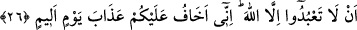
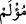
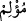

26. “Allah’tan başkasına tapmayın. Gerçekten ben sizin acı bir günün azabına
uğramanızdan korkuyorum.” (dedi.)
“Allah’tan başkasına tapmayın.” yâni Nûh’u, kavmine şirki yasaklama vazifesiyle
gönderdik.
et-Te’vîlâtü’n-Necmiyye’de şöyle denilir: “Nûh rûhu, kavmi olan kalb, nefis ve
bedene şöyle dedi: “Dünyaya ve şehvetlerine, âhirete ve derecelerine “tapmayın.”
Çünkü Allah’a yapılan ibâdet, dünyevî veya uhrevî herhangi bir illete bağlı olarak
yapılırsa, bu ibâdeti yapanlar gerçekte Allah’a değil, o şeye ibâdet etmiş olurlar.”
Bu yüzden şöyle demişlerdir: İman ve itâate duyulan arzu, sırf îmân ve itâat için
olursa fayda verir. Bunlara karşı duyulan arzu, sevap kazanmak için ya da azabdan
korkma sebebiyle olursa fayda sağlamaz. (Bu söz mânevî derecesi yüksek velîler
hakkında söylenmiştir.)
Şeyh Mağribî (k.s) şöyle der:
Dîdar cennetinde senin cemâlinin müşâhedesi vardır
Kusur olur eğer ben hûrîye meyl eder isem
“Gerçekten ben sizin acı bir günün” kıyamet gününün ya da tufan gününün “azabına
uğramanızdan korkuyorum.”
“
(acı)” kelimesi, ‘gün’ün sıfatı da olabilir, ‘azab’ın sıfatı da olabilir. Acı olarak
vasfedilmesi, mübâlağa için mecâzî isnâd tarzındadır. Yâni acının güne isnâd edilmesi,
“Gündüzü oruçludur” sözünde olduğu gibi zarfa isnaddır. Acının azâba isnâdı ise
“Gayreti çok ve ciddi oldu.” sözünde olduğu gibi bir vasfa isnâddır. Gerçekte acıyı
hisseden, azâb kendisine dokunan, azap edilen şahıstır. Azabın ne vasfı ne de zamanı
acıyı hisseder. Azâbın vasfı ve vakti acı çekmek vasfedildiğinde, o şahsın hissettiği
acının içinde bulunduğu zamana ve vasıflara bile sirayet edecek dereceye ulaştığını
gösterir. Bu mânâya göre “
” kelimesi, “
(elem duyulan)” mânâsında isim-i
mef‘ûldür. “
(elem verici)” mânâsında ism-i fâil olması da mümkündür. Hakikatte o
Allah Teâlâ’nın sıfatıdır. Çünkü acıyı yaratan O’dur.
Rivâyet edilir ki Allah Teâlâ Nûh’u kavmine bir bayram günü gönderdi. Nûh kavmi o
sırada putlara tapıyor, şarap içiyor ve kadınlarla hayvanlar gibi örtünmeksizin
birleşiyorlardı. Nûh (a.s.) yüksek sesle nidâ ederek onları tevhide çağırdı. Onlar da
korkup Nûh’u mecnun olmakla suçladılar, dövdüler ve yalanladılar. Nitekim Allah
Teâlâ şöyle buyuruyor: